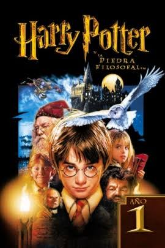

Harry Potter y la piedra filosofal

Un día cerca del undécimo cumpleaños de Harry Potter, un chico huérfano, comienza a percibir extraños acontecimientos a su alrededor, los cuales alcanzan su punto máximo cuando unas cartas enviadas desde el Colegio Hogwarts de Magia y Hechicería llegan a la casa donde vive con sus tíos. Las cartas destapa los secretos que sus tíos le escondieron durante toda su vida: sus padres fueron magos y un mago tenebroso –Lord Voldemort– los asesinó en una época de guerra encarnizada, por lo que Harry es un mago de la misma manera y deberá comenzar sus estudios como tal en esa escuela. Para este fin, Dumbledore, le muestra la fortuna monetaria que le dejaron sus padres.
Escoltado por el guardabosques del colegio, Rubeus Hagrid, Harry parte rumbo al colegio de magos donde se esconde un antiguo objeto legendario, la piedra filosofal. Al lado de los que se volverían sus mejores amigos, Ron Weasley y Hermione Granger, Harry intenta convencer a sus profesores de que la piedra puede ser robada por el profesor Severus Snape, lo cual es negado por los últimos pues afirman que se encuentra en un lugar seguro y protegido. Durante las aventuras, el protagonista averigua más sobre su verdadero pasado.